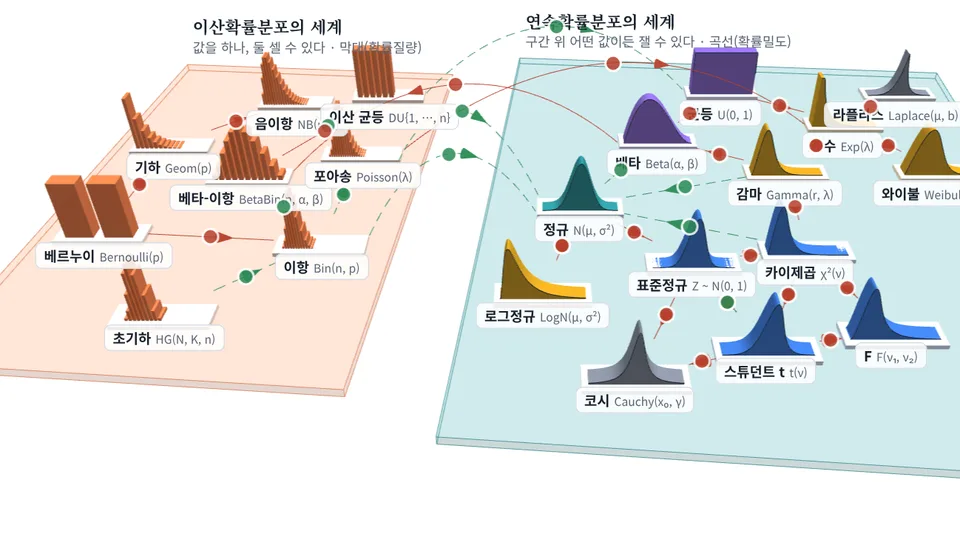
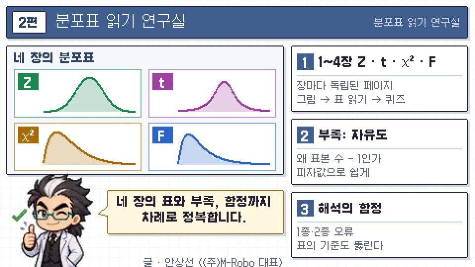
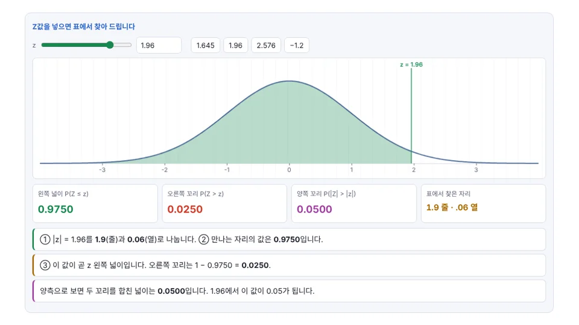
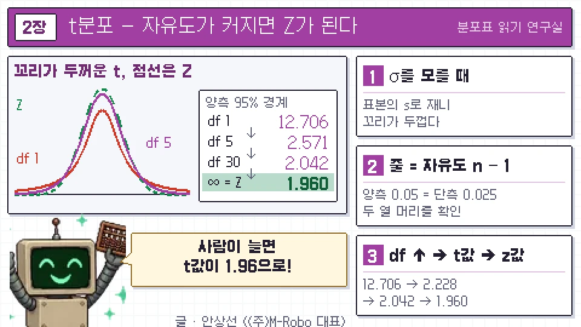
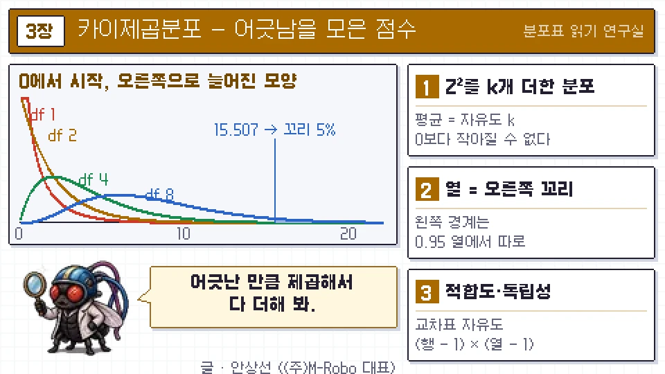
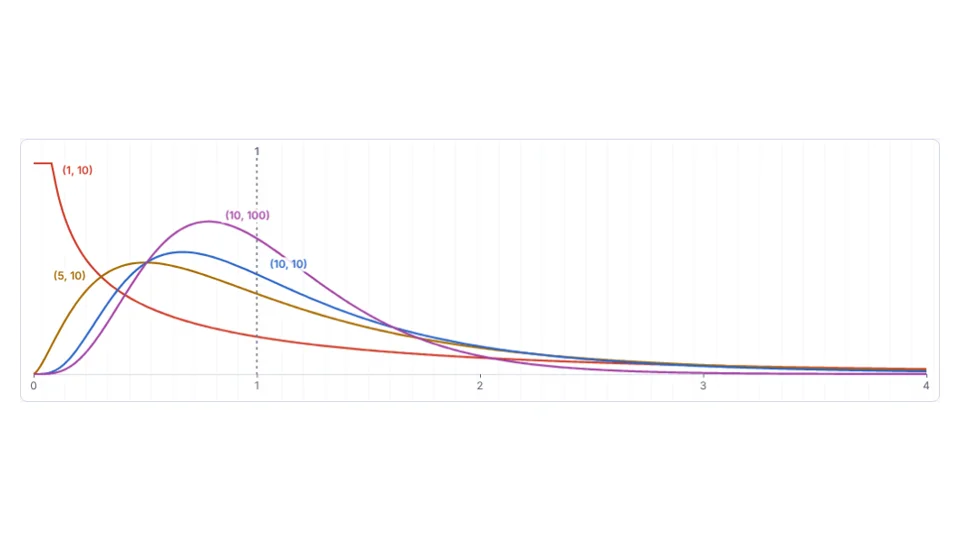
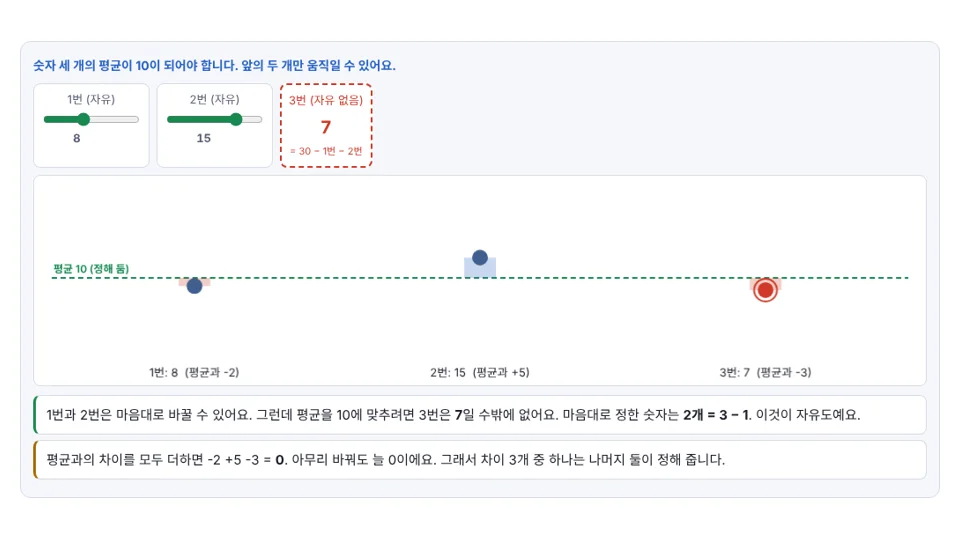
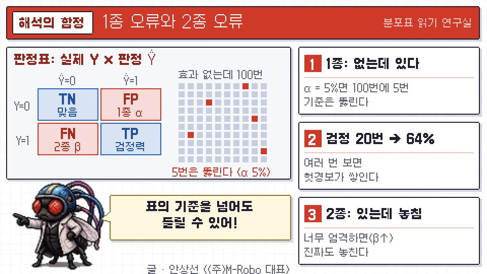

분포들이 어떻게 이어지는지 먼저 지도로 보고, 그 분포의 표를 읽어 검정과 신뢰구간에 쓰는 법까지 이어 봅니다.

이산확률분포의 세계와 연속확률분포의 세계로 나눈 3D 지도. 21개 분포를 각자의 3D 그래프로 보여 주고 관계를 잇습니다. 분포마다 식, 용도, 파이썬 호출, 생성 AI 프롬프트.

분포표마다 독립된 장으로 나눴습니다. 아래에서 장을 바로 고르거나, 목차 페이지에서 연구실 식구·말과 기호·정리를 봅니다.

표준정규분포표. 표준화, 왼쪽 넓이, 단측·양측 경계값.

t분포 그리기. 자유도가 커지면 표의 t값이 z값 1.96에 다가간다.

어긋남을 모은 점수. 적합도·독립성 검정과 χ²표.

두 흩어짐의 비율. 분자·분모 자유도와 α별 F표.

자유도란 무엇인가, 왜 표본 수 − 1인가.

판정표 Y·Ŷ. 표의 기준을 넘어도 뚫린다. 분포표 주의사항.